CRAM SESSION · ZERO-BASE
抱佛腳速成（零基礎版）
有機化學期末考 ｜ Ch 20 醛酮 · Ch 21 羧酸衍生物 · Ch 22 α-碳化學
給「完全沒讀過」也能在 1 小時內拚 60 分的你 ૮ ˶ˆ ﻌ ˆ˶ ა
給「完全沒讀過」也能在 1 小時內拚 60 分的你 ૮ ˶ˆ ﻌ ˆ˶ ა
不用慌，這頁從零教起。
我假設你連「什麼是羰基」都不確定。所以前面 10 分鐘我們先講一個核心觀念，後面所有反應都繞著它轉。
策略：先懂大圖（10 分鐘）→ 再背高 CP 題目（30 分鐘）→ 最後機制衝刺（20 分鐘）
我假設你連「什麼是羰基」都不確定。所以前面 10 分鐘我們先講一個核心觀念，後面所有反應都繞著它轉。
策略：先懂大圖（10 分鐘）→ 再背高 CP 題目（30 分鐘）→ 最後機制衝刺（20 分鐘）
學習路徑與分數預估
奠基核心觀念（10 分鐘）— 不讀後面看不懂基礎
階段 1純背就拿（20 分鐘）~25 分
階段 2三大機制（20 分鐘）~20 分
階段 3轉換 + NMR（15 分鐘）~15 分
總計（65 分鐘）≈ 55-65 分
★ 真．保底策略：讀完「奠基 + 階段 1」 → 約 30 分鐘 → 拚 30-40 分及格邊。
★ 加上階段 2 的三大機制 → 拚 50 分過關。
★ 全部讀完 → 60+ 分穩當。
★ 加上階段 2 的三大機制 → 拚 50 分過關。
★ 全部讀完 → 60+ 分穩當。
PHASE 0 · FOUNDATIONS
奠基階段 ｜ 連分子長怎樣都還沒看過？從這開始
10 分鐘看懂三章在幹嘛 (ﾉ◕ヮ◕)ﾉ*
0.1
這三章在講「同一個東西」：C=O
★★★★★
⓪ 基本到不行的設定
羰基（carbonyl）就是寫成 C=O 的那一塊（碳跟氧用雙鍵接著）。
整本期末考的範圍 — Ch 20、Ch 21、Ch 22 全部都在玩 C=O。差別只在 C 旁邊接了什麼：
- Ch 20 醛酮：C=O 旁邊接 H 或碳鏈（沒有離去基）
- Ch 21 羧酸衍生物：C=O 旁邊接 -OH / -Cl / -OR / -NR₂（這些可以離開）
- Ch 22 α-碳化學：玩 C=O 旁邊那個 C 上的氫（叫做 α-H）
把 C=O 想成磁鐵。氧很愛搶電子（負極🔵），所以碳變得缺電子（正極🔴）。
考試的所有反應都是：帶電子的傢伙（叫親核劑）跑去攻擊那個正極 C。
記住這一句，後面 90% 反應你就懂了。
考試的所有反應都是：帶電子的傢伙（叫親核劑）跑去攻擊那個正極 C。
記住這一句，後面 90% 反應你就懂了。
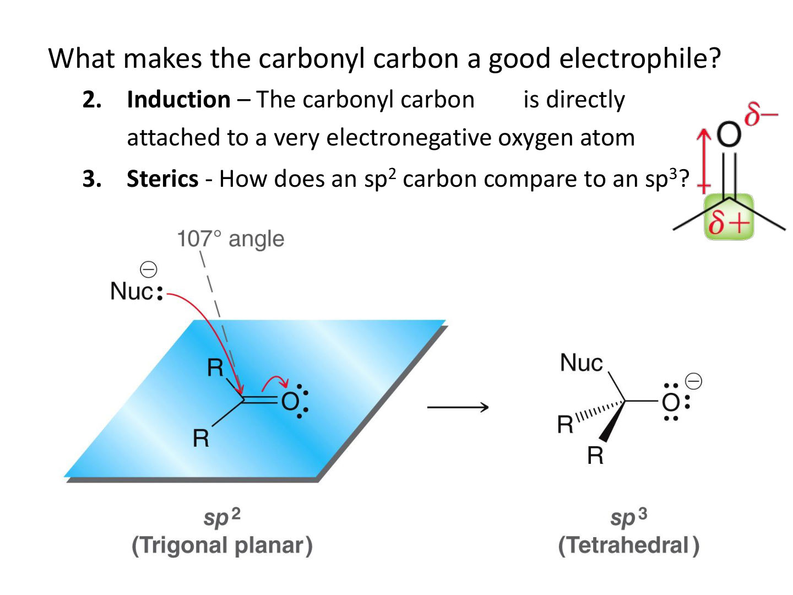
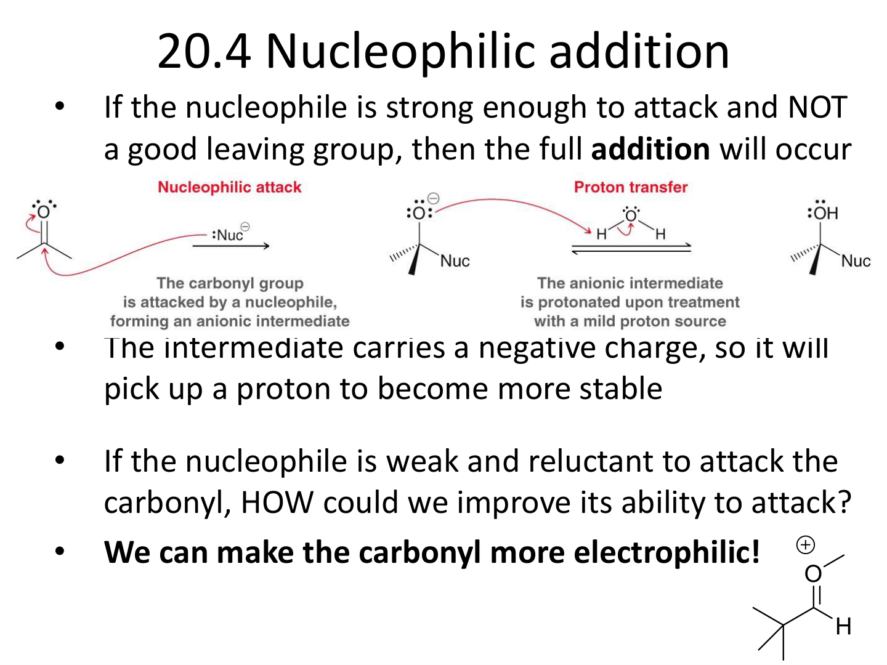
0.2
兩個關鍵詞：親核劑、親電劑
★★★★★
⓪ 翻譯一下這兩個怪詞
| 術語 | 白話 | 例子 |
|---|---|---|
| 親核劑 (Nucleophile, Nu⁻) | 有多餘電子，想送出去（負電傢伙） | -OH、-NH₂、-CN、Grignard R-MgBr、enolate |
| 親電劑 (Electrophile, E⁺) | 缺電子，等人來送（正電傢伙） | C=O 的那個 C、H⁺、烷基鹵 R-X |
記憶口訣：「親核愛核」。
Nu⁻ 帶負電 → 喜歡攻擊正電的地方（C=O 的 C）。
Ch 20-22 所有反應的第一步都是親核劑攻擊 C=O 的 C。把這句畫螢光筆。
Nu⁻ 帶負電 → 喜歡攻擊正電的地方（C=O 的 C）。
Ch 20-22 所有反應的第一步都是親核劑攻擊 C=O 的 C。把這句畫螢光筆。
0.3
三章的差別：加上去 vs 換掉 vs 旁邊 H
★★★★★
| 章節 | 反應類型 | 怎麼發生 |
|---|---|---|
| Ch 20 醛酮 | 親核加成 (Nu addition) | Nu 攻擊 C → C=O 變成 C-O⁻ → 再質子化得 C-OH。 加上去就停了，沒有東西離開。 |
| Ch 21 酯/醯胺等 | 親核取代 (Nu acyl substitution) | Nu 攻擊 C → 形成中間體 → 原本接的 -OR / -Cl 跑掉 → 換成 Nu。 |
| Ch 22 α-碳 | enolate 化學 | 強鹼拔走 C=O 旁邊的 α-H → 那個 C 變負電（enolate）→ 自己變成 親核劑去攻擊別人的 C=O。 |
用便當理解：
・Ch 20 = 加配菜到便當（東西進去就好，沒有東西掉出來）
・Ch 21 = 換掉便當裡的菜（新菜進去舊菜出來）
・Ch 22 = 便當盒自己會夾菜（C=O 旁邊變親核劑，主動攻擊別的便當）
・Ch 20 = 加配菜到便當（東西進去就好，沒有東西掉出來）
・Ch 21 = 換掉便當裡的菜（新菜進去舊菜出來）
・Ch 22 = 便當盒自己會夾菜（C=O 旁邊變親核劑，主動攻擊別的便當）
0.4
看到結構圖怎麼辨認？快速 5 個
★★★★
| 結構 | 名稱 | 白話 |
|---|---|---|
R-CHO | aldehyde 醛 | C=O 旁邊接 1 個 H 跟 1 個碳 |
R-CO-R' | ketone 酮 | C=O 旁邊接 2 個碳，沒有 H |
R-COOH | carboxylic acid 羧酸 | C=O 旁邊接 -OH |
R-COCl | acid chloride 醯氯 | C=O 旁邊接 -Cl（最猛的） |
R-CO-O-R' | ester 酯 | C=O 旁邊接 -O-R |
R-CO-NH₂ | amide 醯胺 | C=O 旁邊接 -N |
R-CO-O-CO-R | anhydride 酸酐 | 兩個 C=O 中間夾一個 -O- |
R-CN | nitrile 腈 | C≡N 三鍵（也算 C=O 親戚） |
考試辨認小撇步：先找 C=O，然後看「右邊那條鍵接到什麼」。接到雜原子（N、O、X）就是 Ch 21 範圍。接到 C 或 H 就是 Ch 20 範圍。
0.5
期末考會考什麼題型？先知道才不會白忙
★★★★★
| 題型 | 占分 | 難度 | CP 值 |
|---|---|---|---|
| 名詞解釋（背定義） | 10-14 分 | ★ | ⭐⭐⭐⭐⭐ |
| IUPAC 命名 | 9-15 分 | ★★ | ⭐⭐⭐⭐ |
| 轉換（給目標分子寫試劑） | 12 分 | ★★★ | ⭐⭐⭐ |
| 識別 a-f 試劑 | 6-12 分 | ★★★ | ⭐⭐⭐ |
| 預測產物 | 6-9 分 | ★★★ | ⭐⭐⭐ |
| 機制題（畫箭頭推電子） | 30-50 分 | ★★★★ | ⭐⭐ |
| NMR 推結構 | 8 分 | ★★★★ | ⭐⭐ |
給零基礎的策略：
・先把名詞解釋 + IUPAC + 試劑表吃下來 → 30 分起跳
・再背三大機制（Aldol / Claisen / Robinson）→ 再加 15-20 分
・剩下時間練兩題舊試題就好，不要嘗試把所有機制都背完，會崩潰
・先把名詞解釋 + IUPAC + 試劑表吃下來 → 30 分起跳
・再背三大機制（Aldol / Claisen / Robinson）→ 再加 15-20 分
・剩下時間練兩題舊試題就好，不要嘗試把所有機制都背完，會崩潰
PHASE 1
階段 1 ｜ 純背就拿分（20 分鐘）
不用懂原理，照背就好 ⸜( ˶'ᵕ'˶)⸝
1.1
名詞解釋：背這 10 個就夠
10-14 分
★★★★★
每題寫「定義一行 + 試劑一行 + 範例一行」就拿全分。不要寫太多會錯。
| 名詞 | 白話定義 | 關鍵試劑 |
|---|---|---|
| Aldol reaction | 兩個醛酮在鹼下接起來，得 β-羥基羰基 | NaOH 或 NaOEt |
| Michael addition | 穩定 enolate 攻擊 α,β-不飽和酮的 β 碳（1,4-加成） | β-酮酯 + α,β-不飽和酮 |
| Claisen condensation | 兩個酯在鹼下接起來，得 β-酮酯 | NaOEt |
| Dieckmann cyclization | 分子內的 Claisen，雙酯關環變 β-酮酯 | NaOEt |
| Robinson annulation | Michael + 分子內 Aldol → 六員環α,β-不飽和酮 | KOH / EtOH |
| Haloform reaction | 甲基酮 + 過量 X₂/NaOH → 羧酸 + CHX₃ | I₂ / NaOH |
| HVZ reaction | 羧酸 α 位置溴化 | PBr₃ + Br₂ |
| Baeyer-Villiger | 酮 → 酯（C-CO 之間插入 O） | mCPBA（過氧酸） |
| Fischer Esterification | 羧酸 + 醇 ⇌ 酯 + 水（平衡） | H₂SO₄ 催化 |
| Lactone / lactam | 環狀酯 / 環狀醯胺 | 分子內成環 |
| Keto-enol tautomer | 同分子的酮型 ⇌ 烯醇型互換 | α-H 轉移 |
應考範本（以 Aldol 為例）：
「兩分子醛或酮在鹼性條件（NaOH/NaOEt）下，一者拔 α-H 形成 enolate 作為親核劑，攻擊另一者的羰基 C，得到 β-hydroxy carbonyl。加熱可進一步脫水形成 α,β-不飽和羰基（Aldol condensation）。」 — 三行拿滿分。
「兩分子醛或酮在鹼性條件（NaOH/NaOEt）下，一者拔 α-H 形成 enolate 作為親核劑，攻擊另一者的羰基 C，得到 β-hydroxy carbonyl。加熱可進一步脫水形成 α,β-不飽和羰基（Aldol condensation）。」 — 三行拿滿分。
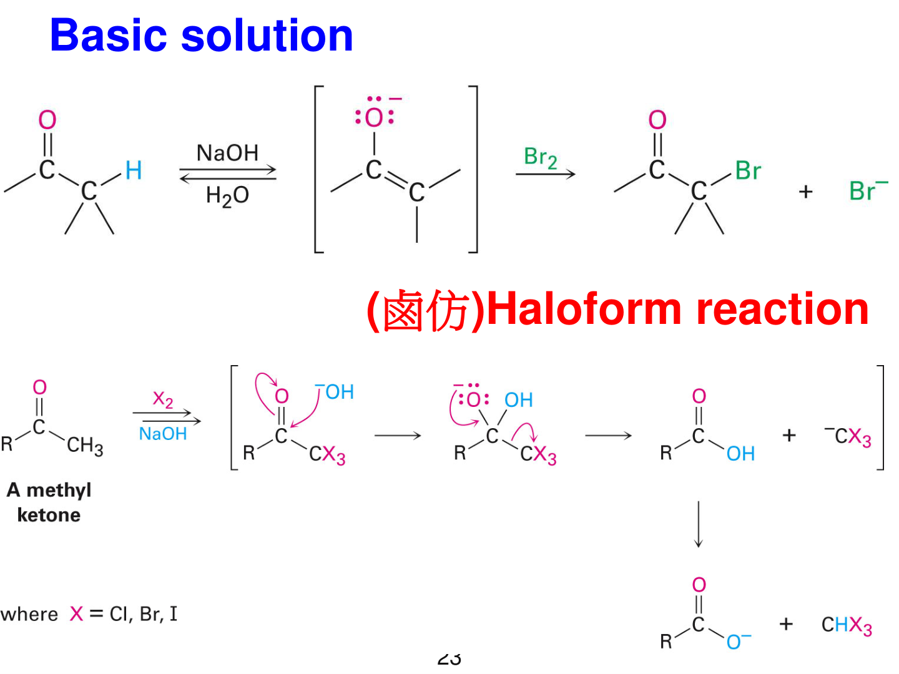
1.2
羧酸衍生物反應性順序（必考）
6 分
★★★★★
反應性由高到低：
醯氯 > 酸酐 > 酯 > 醯胺
（acid chloride > anhydride > ester > amide）
醯氯 > 酸酐 > 酯 > 醯胺
（acid chloride > anhydride > ester > amide）
為什麼這樣排？ 因為「離去基越穩定，越容易掉出來」：
・-Cl⁻ 是強酸的共軛鹼，超穩定 → 醯氯最猛 🔥
・-NH₂⁻ 是弱酸的共軛鹼，不想離開 → 醯胺最弱 🐌
這個順序決定了「從高的可以做出低的」（單向）。
例：醯氯 + 醇 → 酯（O），酯 → 醯氯（X，不可逆）。
・-Cl⁻ 是強酸的共軛鹼，超穩定 → 醯氯最猛 🔥
・-NH₂⁻ 是弱酸的共軛鹼，不想離開 → 醯胺最弱 🐌
這個順序決定了「從高的可以做出低的」（單向）。
例：醯氯 + 醇 → 酯（O），酯 → 醯氯（X，不可逆）。
考試出現「能不能做」的判斷題，左邊比右邊更反應性才行。記這一條救命。
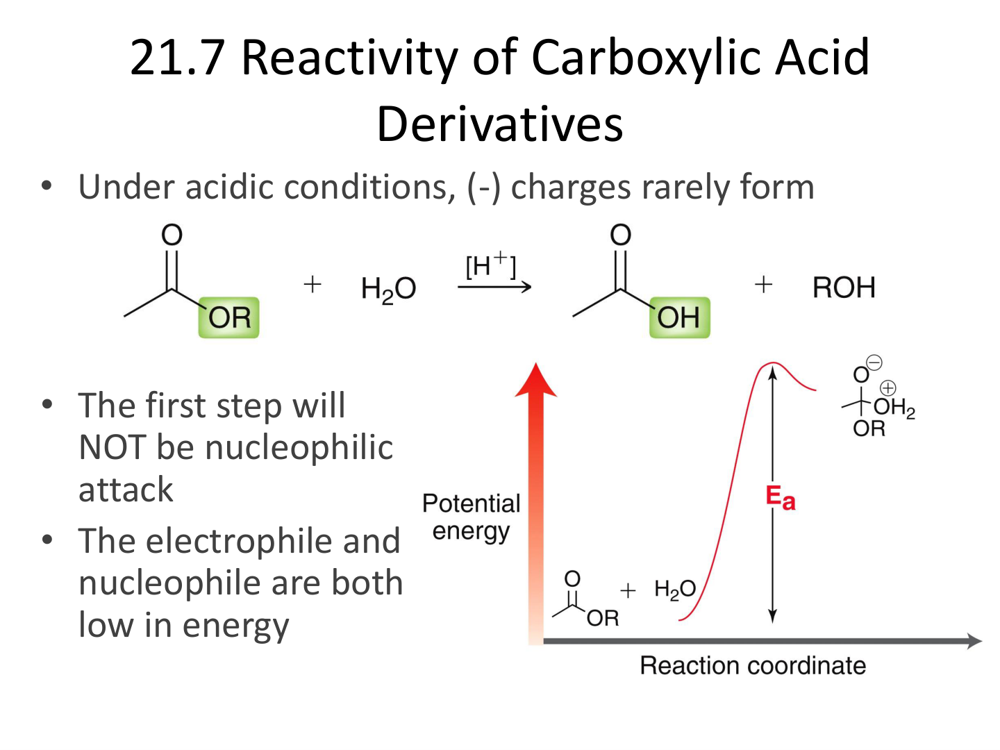
1.3
8 個必背試劑（轉換題吃這張表）
12 分
★★★★★
| 試劑 | 用途（從 → 到） | 關鍵點 |
|---|---|---|
| LiAlH₄（過量） | 酯 / 醯胺 / 羧酸 / 醛 / 酮 → 全還原到 1° 醇 | 最強還原劑，一路還原到底 |
| NaBH₄ | 醛 / 酮 → 醇（不還原酯 / 酸） | 溫和版 |
| DIBAH (-78°C, 1 eq) | 酯 → 醛（停在中間！） | 低溫 + 1 當量是關鍵 |
| Grignard (RMgBr) 過量 | 酯 / 醯氯 → 3° 醇（接兩次 R） | 過量 = 接兩次 |
| Gilman (R₂CuLi) | 醯氯 → 酮（停在中間！） | 跟 Grignard 反過來 |
| SOCl₂ | 羧酸 → 醯氯 | 把酸升級到最反應性 |
| mCPBA | 酮 → 酯（Baeyer-Villiger） | 遷移序：3° > phenyl > 1° > methyl |
| NaOEt | 拔 α-H 形成 enolate | Aldol / Claisen / Dieckmann 都用它 |
三組「停在中間 vs 衝到底」對比，考試 100% 出：
- 還原酯到醛：DIBAH（停）vs LiAlH₄（衝到醇）
- 醯氯到酮：Gilman R₂CuLi（停）vs Grignard（衝到 3° 醇）
- 醯氯到酯：醇 + pyridine 吸 HCl（pyridine 是吸 HCl 的弱鹼）
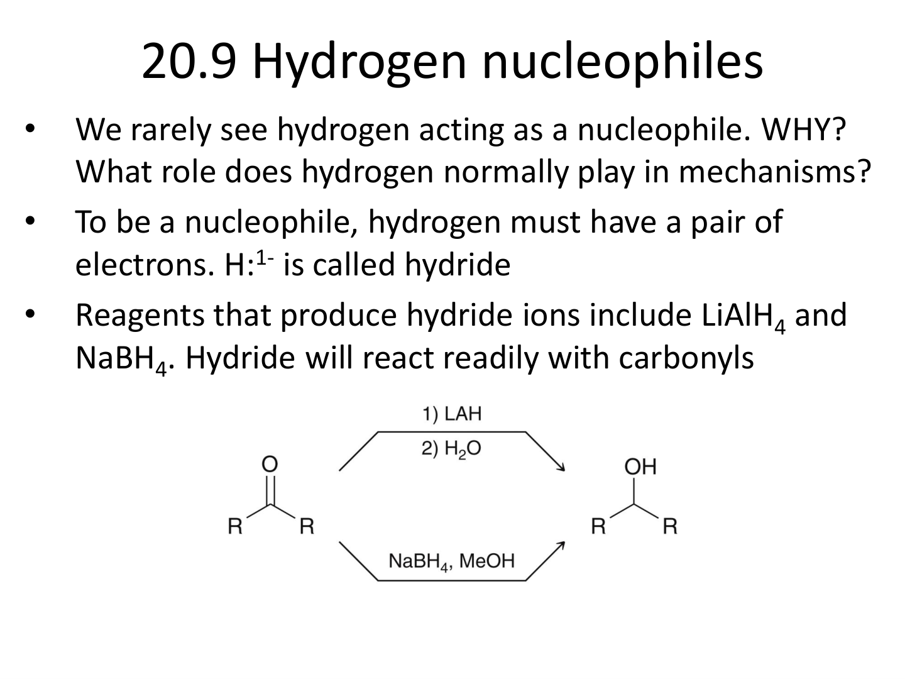
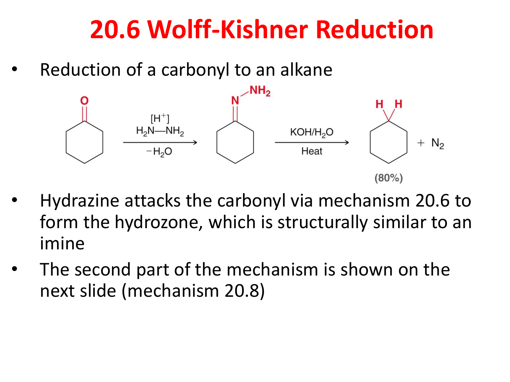
1.5
1,2 vs 1,4 加成（α,β-不飽和酮的選擇）
6-10 分
★★★★★
⓪ 從零開始
α,β-不飽和酮長這樣：C=C-C=O（C=C 跟 C=O 連在一起，叫共軛羰基）。
這種分子被 Nu⁻ 攻擊時有兩個位置可選：
- 1,2-加成：Nu 直接打 C=O 的 C（最近那個）→ 得到 烯丙醇（C=C-C-OH）
- 1,4-加成（Michael）：Nu 繞到遠的 β-碳 → 得到 β-取代羰基（飽和的 C=O）
記憶口訣：「強直接、弱穿越」
RMgBr / RLi / LiAlH₄ 太猛 → 衝最近的 C=O → 1,2
R₂CuLi（Gilman）/ 胺 / enolate 較弱 → 繞到 β → 1,4
RMgBr / RLi / LiAlH₄ 太猛 → 衝最近的 C=O → 1,2
R₂CuLi（Gilman）/ 胺 / enolate 較弱 → 繞到 β → 1,4
用人話講：強壯的客人衝進門就坐第一個位子（C=O 的 C，1,2 加成）；溫和的客人會走到比較遠的座位（β-碳，1,4 加成）。
考試會問「用什麼試劑做出什麼產物」，看到 Gilman 反射答「1,4」；看到 Grignard 反射答「1,2」。
考試會問「用什麼試劑做出什麼產物」，看到 Gilman 反射答「1,4」；看到 Grignard 反射答「1,2」。
110 Q1(b) 出題
解釋 1,2-Addition 與 1,4-Addition。
答：強 Nu（RMgBr / LiAlH₄）走 1,2 → 烯丙醇；弱 Nu（R₂CuLi）走 1,4 → β-取代飽和酮。Michael 加成（1,4）也是 Robinson annulation 第一步。
答：強 Nu（RMgBr / LiAlH₄）走 1,2 → 烯丙醇；弱 Nu（R₂CuLi）走 1,4 → β-取代飽和酮。Michael 加成（1,4）也是 Robinson annulation 第一步。
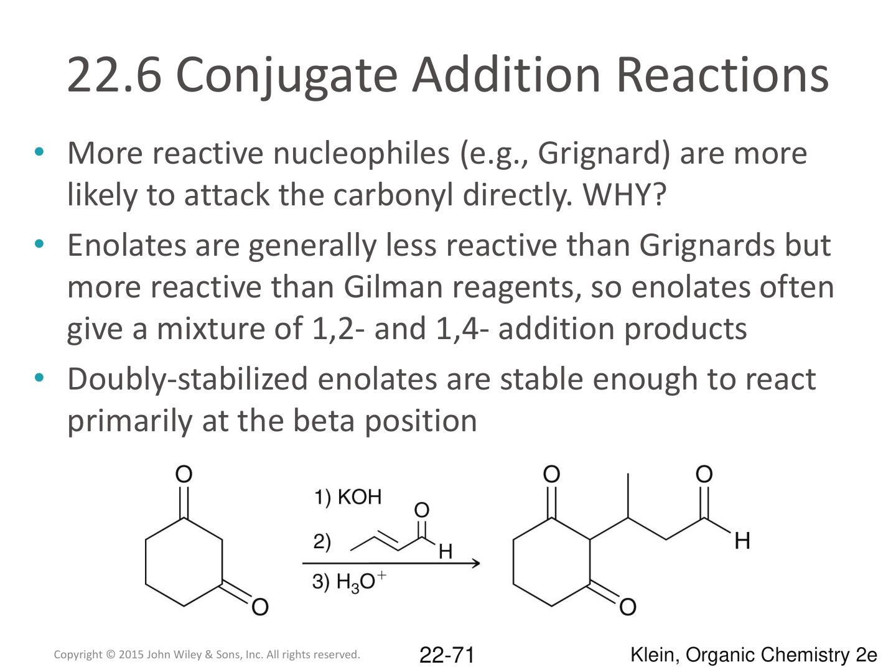
1.4
IUPAC 命名速通
9-15 分
★★★★
| 結構 | 後綴 / 命名規則 | 例子 |
|---|---|---|
| 羧酸 R-COOH | -anoic acid | Butanoic acid（4 碳酸） |
| 酯 R-CO-O-R' | "R' 基" + "R-anoate" | Ethyl butanoate |
| 醯胺 R-CO-NH₂ | -anamide | Butanamide。N 上取代寫 N- |
| 醯氯 R-COCl | -anoyl chloride | Butanoyl chloride |
| 酸酐 | 兩個酸名 + anhydride | Acetic anhydride |
| 腈 R-CN | -anenitrile | Butanenitrile（CN 算 C1） |
| 醛 R-CHO | -anal | Butanal |
| 酮 R-CO-R' | -anone（+ 位置數字） | 2-Butanone |
三條保命規則：
- 第一個字母大寫（學生最常忘）— 「Ethyl butanoate」不是「ethyl butanoate」
- 編號從含 C=O 的官能基開始（COOH 永遠是 C1）
- 苯環當取代基寫 phenyl-；苯+COOH 寫 benzoic acid
111 Q2 原題
(a) CH₃CH₂CH₂-CO-O-CH₂CH₃ → Ethyl butanoate
(b) 苯環+COOH(C1)+CN(C3) → 3-Cyanobenzoic acid
(c) 苯甲酸與丁酸的混合酸酐 → Benzoic butanoic anhydride
(b) 苯環+COOH(C1)+CN(C3) → 3-Cyanobenzoic acid
(c) 苯甲酸與丁酸的混合酸酐 → Benzoic butanoic anhydride
PHASE 2
階段 2 ｜ 三大機制必背（20 分鐘）
機制題佔最多分，先吃這三個 ✿
2.1
機制 ①：Aldol（醛醇縮合）
6-10 分
★★★★★
三步驟（背口訣）
- 拔 H：NaOH（或 NaOEt）拔走 α-H → 形成 enolate（C=C-O⁻）
- 攻擊：enolate 的 α-C 攻擊另一個醛酮的 C=O 的 C
- 質子化：產物的 O⁻ 接 H → 得到 β-hydroxy carbonyl（β 位有 OH，旁邊還有 C=O）
加熱條件下 → 脫水（E1cb）→ α,β-不飽和羰基（Aldol condensation）
用人話講：兩個醛酮見面，一個被鹼搶走「脖子旁邊的 H」變得長負電（enolate），就跟另一個的「脖子（C=O 的 C）」勾起來。最後拿熱風吹一下脫水，得到 C=C-C=O 結構。
畫機制給分點：箭頭要從負電（電子對）指向正電。每一步畫一個 彎曲箭頭（curved arrow）就拿 1 分。共三個箭頭。
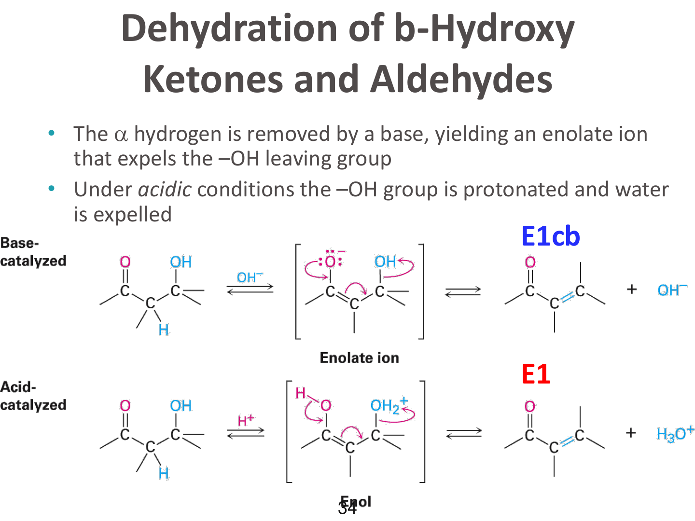
2.2
機制 ②：Claisen / Dieckmann（酯版的 Aldol）
6-10 分
★★★★★
四步驟（多一步因為有離去基）
- 拔 H：NaOEt 拔走酯的 α-H → ester enolate
- 攻擊：enolate 攻擊另一個酯的 C=O
- 離去：四面體中間體裡的 -OEt 跑掉 → 得 β-酮酯
- 去質子：產物的 α-H 被鹼拔走（酸性更強），推平衡走
產物：β-keto ester（兩個 C=O 中間隔一個 α-C）。
Dieckmann = 分子內 Claisen。
起始物是雙酯（兩端都有 -COOR），一端的 α-H 被拔變 enolate，攻擊另一端 → 關環得到 5 或 6 員環 β-酮酯。
考點：能形成 5 / 6 員環的位置才會反應。
起始物是雙酯（兩端都有 -COOR），一端的 α-H 被拔變 enolate，攻擊另一端 → 關環得到 5 或 6 員環 β-酮酯。
考點：能形成 5 / 6 員環的位置才會反應。
記憶法：
・Aldol（醛酮）= 加水（O 留在分子裡變 -OH）→ β-hydroxy
・Claisen（酯）= 踢 OR 走 → β-keto
差別就是「酯多一條腿可以踢」。
・Aldol（醛酮）= 加水（O 留在分子裡變 -OH）→ β-hydroxy
・Claisen（酯）= 踢 OR 走 → β-keto
差別就是「酯多一條腿可以踢」。
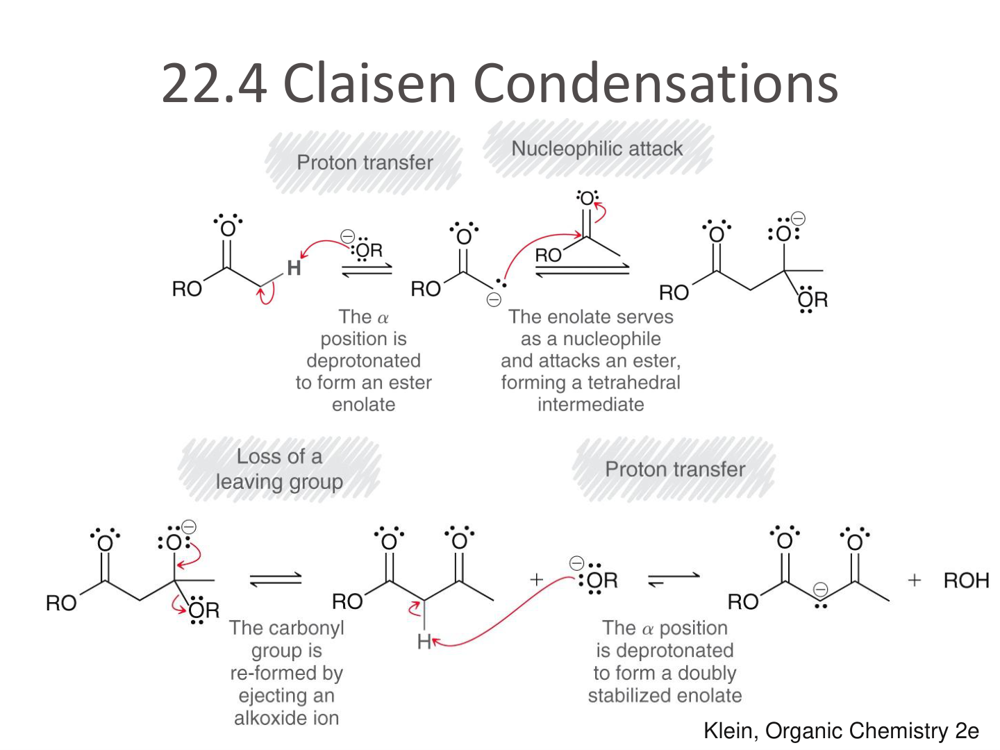
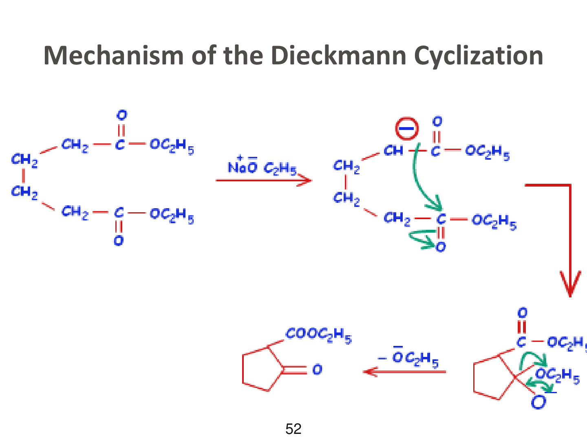
2.3
機制 ③：Robinson Annulation（環化縮合）
6-8 分
★★★★★
三階段（直接背順序）
- Michael 加成：環酮 enolate 攻擊 α,β-不飽和酮的 β 碳（1,4-加成）→ 得 1,5-二酮
- 分子內 Aldol：另一端 α-H 被拔，分子內攻擊另一個 C=O → β-hydroxy ketone
- 脫水：E1cb 脫掉 -OH → 得 α,β-不飽和環酮（六員環）
看到 KOH/EtOH + 二酮 = Robinson。背：
Michael → Aldol → 脫水 ＝ 環化縮合三部曲
Michael → Aldol → 脫水 ＝ 環化縮合三部曲
機制題答法：每個階段畫 2-3 個箭頭，總共 6-8 個箭頭。不要省略 1,5-二酮的中間結構，那是 Michael 完成的證據（給分點）。
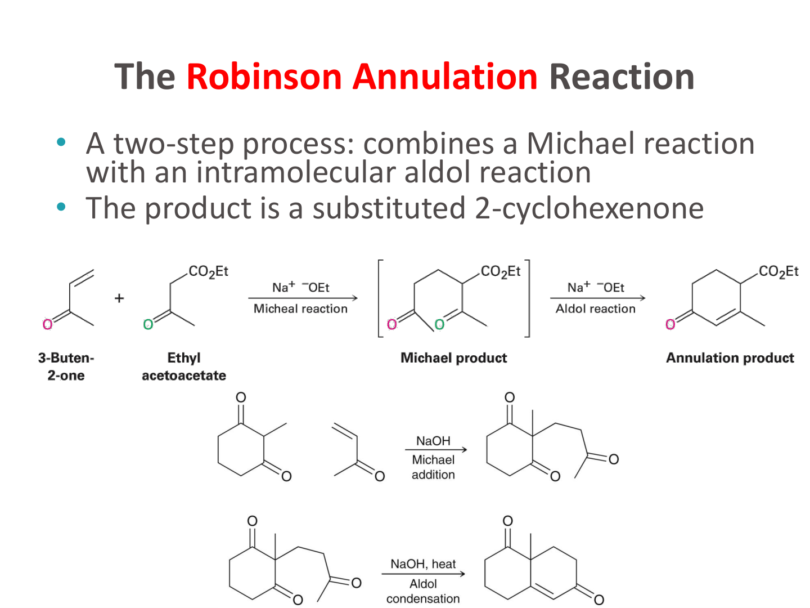
2.4
補充：另外三個常考機制（簡記）
12 分
★★★★
Wittig 反應（醛酮 → 烯）
三步驟：
- Ph₃P=CR₂（葉立德）的 C⁻ 攻擊酮的 C → 形成 betaine（兩個電荷）
- O⁻ 攻擊 P⁺ → 四員環 oxaphosphetane
- 環逆向 [2+2] 分解 → Ph₃P=O + 烯
葉立德定義：碳上負電 + 磷上正電的雙性離子 R₃P⁺-CR₂⁻。
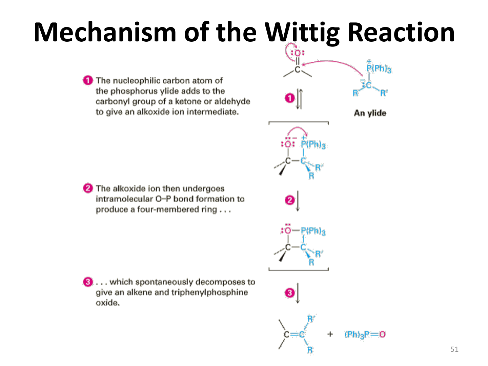
Beckmann 重排（環己酮 → caprolactam）
- 環己酮 + NH₂OH → oxime（C=N-OH）
- H⁺ 質子化 -OH → -OH₂⁺
- 反位的 C-C 鍵電子對遷移到 N，H₂O 離開
- 水攻擊 + tautomer → 七員環醯胺（caprolactam）
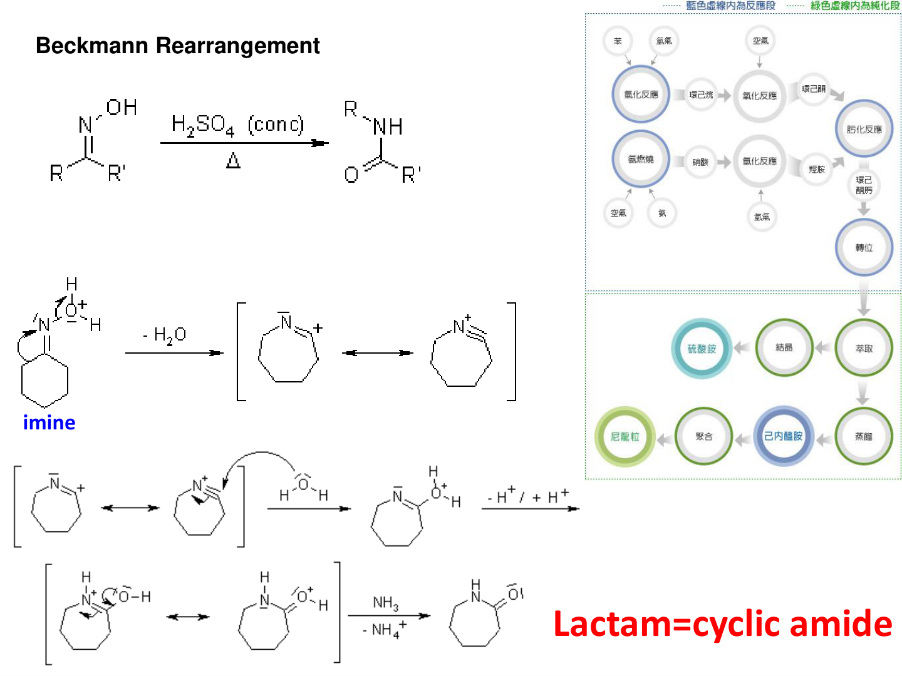
Favorskii（環縮小）
- NaOH 拔 α-H（離去基對側）
- enolate α-C 攻擊 α-C-Br → 環丙酮中間體（給分點）
- OH⁻ 攻擊環丙酮 → 開環 → 少一員環的羧酸
PHASE 3
階段 3 ｜ 轉換 + NMR 衝刺（15 分鐘）
最後拿這部分加分 ⸜(*ˊᗜˋ*)⸝
3.1
轉換題：看目標 → 寫試劑
12 分
★★★★
解題流程：
- 看左邊（起始物）有什麼官能基
- 看右邊（目標）有什麼官能基
- 查 1.3 試劑表，找對應條件
| 從 → 到 | 試劑 |
|---|---|
| 醯胺 → 胺 | (1) 過量 LiAlH₄ (2) H₂O |
| 醯氯 → 3° 醇 | (1) 過量 RMgBr (2) H₂O |
| 酯 → 醛（停！） | (1) DIBAH (-78°C) (2) H₂O |
| 酮 → 羧酸 | (1) HCN (2) H₃O⁺ / heat |
| 醯氯 → 酯 | R-OH + pyridine |
| 醯氯 → 酮（停！） | R₂CuLi（Gilman） |
| 苯 → ArCOOH | RMgBr → CO₂ → H₃O⁺ |
| 羧酸 → 醯氯 | SOCl₂ |
| 烯 → 1° 醇（anti-Markovnikov） | (1) BH₃/THF (2) NaOH/H₂O₂ |
3.2
NMR 推結構：四個訊號就能拿分
8 分
★★★
| δ (ppm) | 什麼 H |
|---|---|
| 0.9 | CH₃ 接 C（普通烷基） |
| 1.3 | -CH₂- 烷基 |
| 2.1-2.5 | α-H（靠近 C=O） |
| 3.7-4.2 | -O-CH₂-（酯的 O 接 CH₂） |
| 5-6.5 | vinylic（C=C 上的 H） |
| 7-8 | aromatic（苯環） |
| 9-10 | 醛 H（CHO） |
IR 看 C=O 位置定官能基：
- 1735 cm⁻¹ → 酯
- 1710 cm⁻¹ → 酮（或 α,β-不飽和酯）
- 1720 cm⁻¹ → 醛
- 1810 + 1750（兩個） → 酸酐
- 1670 cm⁻¹ → 醯胺（最低）
107 Q11 推結構範例
C₅H₉ClO₂ + IR 1735 (酯) + δ 1.26(3H) / 2.77(2H) / 3.76(2H) / 4.19(2H)
→ 訊號數 = 4 個碳片段 → 4.19 是 -O-CH₂-（酯氧旁邊）→ 3.76 是 -CH₂Cl → 2.77 是 -CH₂-（α 位）→ 1.26 是 CH₃
答案：Cl-CH₂-CH₂-CO-O-CH₂-CH₃（3-氯丙酸乙酯）
→ 訊號數 = 4 個碳片段 → 4.19 是 -O-CH₂-（酯氧旁邊）→ 3.76 是 -CH₂Cl → 2.77 是 -CH₂-（α 位）→ 1.26 是 CH₃
答案：Cl-CH₂-CH₂-CO-O-CH₂-CH₃（3-氯丙酸乙酯）
3.3
A→B→C 連續反應題型（兩年都考）
6-9 分
★★★
提示永遠是「i = acid hydrolysis, ii = oxidation, iii = heat」。
流程是：酸水解 → 氧化 → 加熱關環。
流程是：酸水解 → 氧化 → 加熱關環。
翻譯：
- i 酸水解：把所有酯（-O-CO-R）打開，得 -OH + R-COOH（脫掉 CH₃OH 跟 PhCOOH）。產物 A = diol。
- ii 氧化：1° / 2° 醇 → C=O（醛 / 酮）。產物 B = diketone。
- iii 加熱：β-羥基酮 / β-二酮會分子內脫水或重排。產物 C = 環狀 α,β-不飽和酮。
★ 終極小抄（撕下來帶進考場心裡） ★
① 核心觀念（一句話）
- Nu⁻ 永遠攻擊 C=O 的 C。所有反應都從這開始。
② 反應性順序（必記）
- 醯氯 > 酸酐 > 酯 > 醯胺
③ 三組「停 vs 衝」
- 酯 → 醛：DIBAH（-78°C）停 ／ 過量 LiAlH₄ 衝到醇
- 醯氯 → 酮：Gilman R₂CuLi 停 ／ Grignard 衝到 3° 醇
- 醯氯 → 酯：醇 + pyridine（吸 HCl）
③.5 1,2 vs 1,4 加成
- 強 Nu（RMgBr / LiAlH₄）→ 1,2（衝最近 C=O）→ 烯丙醇
- 弱 Nu（R₂CuLi / 胺 / enolate）→ 1,4 Michael（繞到 β-C）→ β-取代飽和酮
④ 三大機制流程
- Aldol：拔 α-H → 攻擊 C=O → 質子化 → β-OH 羰基
- Claisen：拔 α-H → 攻擊 C=O → 踢 OR → β-酮酯
- Robinson：Michael → 分子內 Aldol → 脫水
⑤ IR 看 C=O 數字
- 1735 酯 ／ 1710 酮 ／ 1720 醛 ／ 1670 醯胺 ／ 雙峰酸酐
⑥ 命名規則
- 第一個字母大寫；COOH 永遠是 C1；酯先寫 R' 再寫 -oate
⑦ 解題流程
- 機制題：每步畫一個彎曲箭頭，從負電指向正電，每箭頭 1 分
- 名詞題：定義 + 試劑 + 範例三行就好
- 轉換題：先標起始物與目標的官能基，查試劑表對位
— 一切順利，明天加油 —